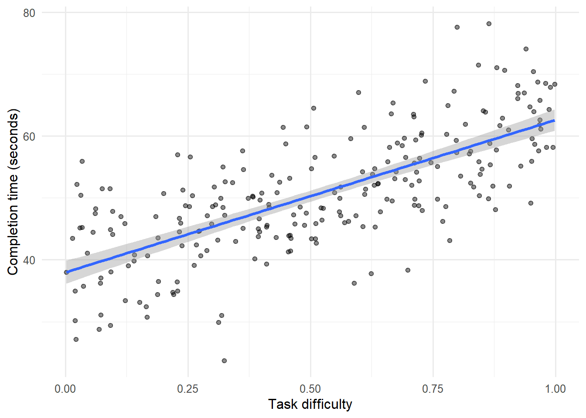
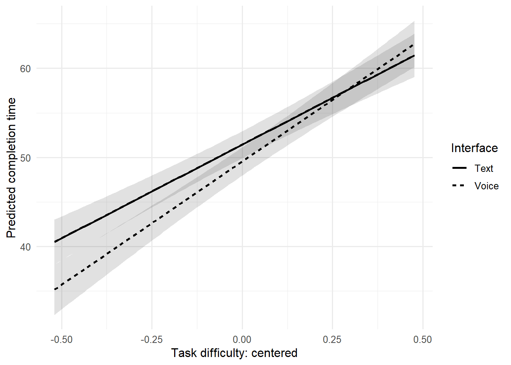
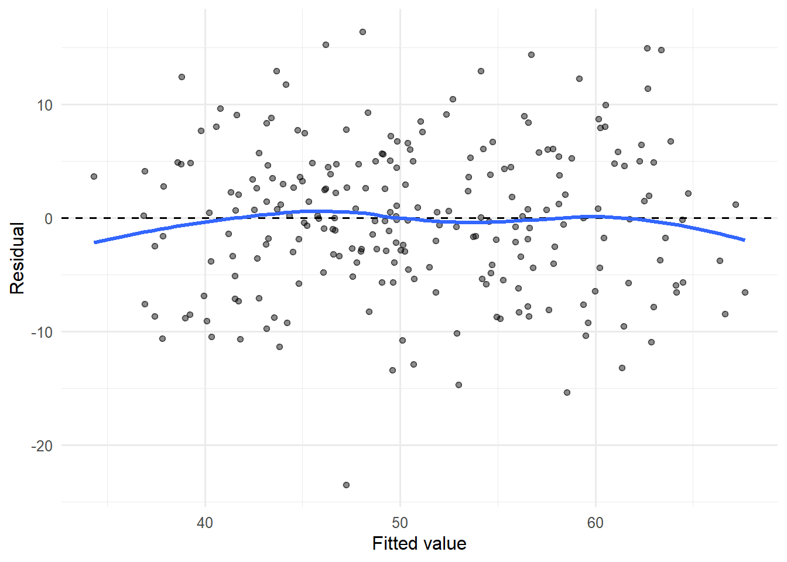
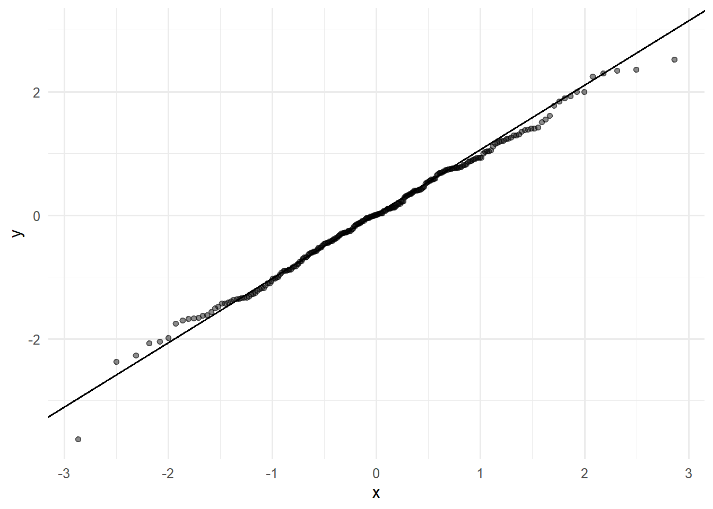
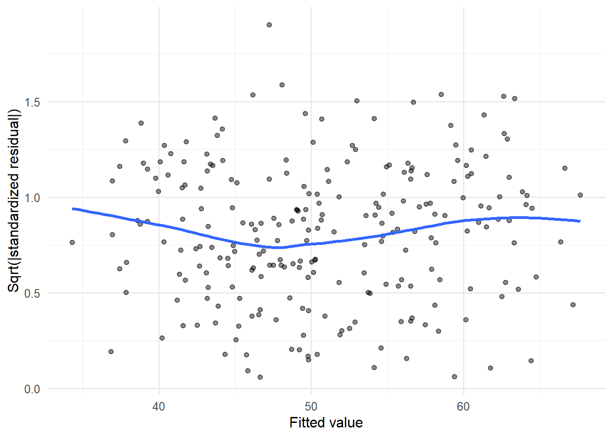
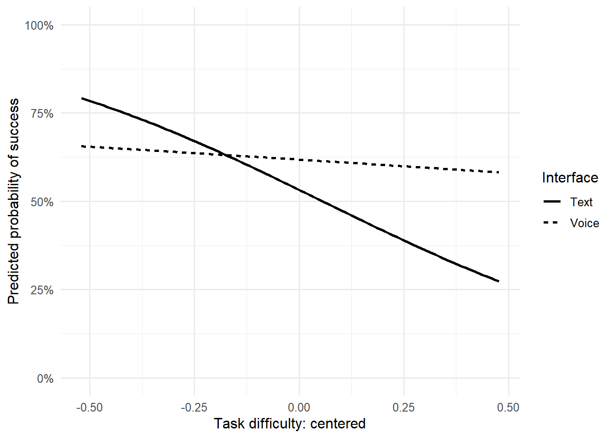
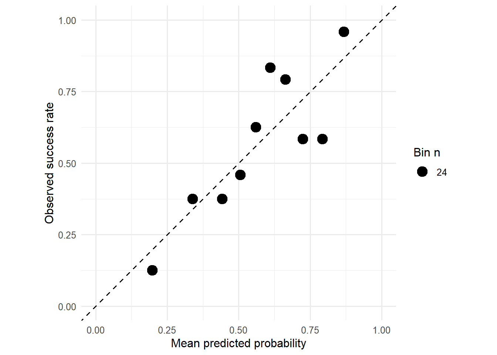

flowchart LR
A["Goal<br>설명·추론·예측·인과"] --> B["Target<br>Outcome과 estimand"]
B --> C["Specification<br>변수·함수형태·상호작용"]
C --> D["Fit<br>계수와 예측값"]
D --> E["Diagnostics<br>잔차·영향점·의존성"]
E --> F["Validation<br>새 자료에서 평가"]
F --> G["Claim<br>효과·연관·예측의 범위"]
회귀분석: 설명, 추론, 예측
Linear Models, GLMs, Diagnostics, and Honest Validation
11주차 학습목표
Note
이번 주 학습을 마치면 다음을 할 수 있어야 합니다.
- 회귀모형을 조건부 평균을 설명하는 모형으로 해석한다.
- 설명, 통계적 추론, 인과추론, 예측이 서로 다른 목표임을 구분한다.
- 수치형·범주형 predictor, interaction, 비선형 항을 올바르게 해석한다.
- 계수, 원단위 예측값, 신뢰구간을 함께 보고한다.
- 선형회귀의 가정을 “데이터가 정규분포인가?”라는 단일 질문으로 축소하지 않는다.
- 잔차, 이분산, 영향점, 함수형태, 군집구조, 공선성을 진단한다.
- confidence interval과 prediction interval을 구분한다.
- binary outcome에는 logistic regression을 적용하고 odds ratio와 예측확률을 구분한다.
- 학습자료와 평가자료를 분리하고 resampling 안에서 전처리하여 leakage를 피한다.
- GenAI를 모형 선택기가 아니라 specification·diagnostic·claim reviewer로 활용한다.
오늘의 핵심 질문
이 회귀계수는 어떤 조건부 비교를 나타내며, 그 비교를 과학적 주장이나 새로운 사례의 예측으로 확장해도 되는가?
1. 회귀분석을 시작하기 전에 목적부터 정하기
같은 회귀식도 목적에 따라 평가 기준이 달라집니다.
| 목표 | 핵심 질문 | 중요한 산출물 | 대표적 위험 |
|---|---|---|---|
| Description | 표본 안에서 변수들이 어떻게 함께 변하는가? | 조건부 평균, 그림 | 표본 밖 일반화 |
| Statistical inference | 목표 모집단의 계수는 어느 범위인가? | estimate, SE, CI | 표집·모형 가정 |
| Causal inference | X를 개입해 바꾸면 Y가 얼마나 변하는가? | causal estimand | confounding, selection |
| Prediction | 새로운 사례의 Y를 얼마나 잘 맞히는가? | out-of-sample error | leakage, overfitting |
Important
높은 \(R^2\)는 인과성을 보장하지 않고, 유의한 계수는 좋은 예측을 보장하지 않으며, 좋은 예측은 이론적 설명을 자동으로 제공하지 않습니다.
네 문장을 구분해 보기
- Voice interface 사용자는 표본에서 평균적으로 더 빨랐다.
- 다른 변수를 통제했을 때 voice coefficient가 음수였다.
- Voice interface로 바꾸면 같은 사용자의 시간이 줄어든다.
- 이 모형은 새로운 사용자의 완료시간을 정확히 예측한다.
각 문장은 필요한 설계와 증거가 다릅니다.
2. GenAI 활용 원칙
이번 주의 순서는 다음과 같습니다.
Specify → Predict → Fit → Diagnose → Challenge → Explain
모형을 대신 고르게 하지 말고 명세를 비판하게 하기
나는 HCI 완료시간을 다음 모형으로 분석하려고 한다.
completion_time ~ interface * task_difficulty + digital_literacy
연구설계:
- interface는 참여자에게 무작위 배정했다.
- 한 참여자는 한 조건만 경험한다.
- task_difficulty는 0~1 연속변수다.
- completion_time은 초 단위 양수값이다.
다음을 reviewer처럼 점검하라.
1. 각 계수가 어떤 기준점에서 해석되는지 질문하라.
2. 인과효과 해석에 필요한 설계 가정을 구분하라.
3. 함수형태, 이분산, 영향점, 범위 밖 외삽을 점검할 그래프를 제안하라.
4. prediction이 목적일 때 추가로 필요한 validation 절차를 제안하라.
5. 완성 코드를 한꺼번에 쓰지 말고 내가 먼저 결정해야 할 사항을 질문하라.안전한 사용
- 실제 민감자료 대신 변수사전, 합성자료,
glimpse()결과를 제공한다. - AI가 제안한 변수를 “유의할 것 같아서” 추가하지 않는다.
- 데이터 전체를 본 뒤 test set을 다시 정의하지 않는다.
- 결과를 본 뒤 nonlinear term이나 interaction을 몰래 confirmatory 가설로 바꾸지 않는다.
- AI 코드도 직접 실행하고, 출력과 도움말로 검증한다.
3. 준비
한 번만 설치
# install.packages(c(
# "tidyverse", "broom", "emmeans",
# "sandwich", "lmtest", "performance",
# "tidymodels", "glmnet"
# ))이번 문서의 기본 패키지
library(tidyverse)
library(broom)
library(emmeans)
theme_set(theme_minimal(base_size = 12))Part I. 선형회귀를 조건부 평균 모형으로 이해하기
4. HCI 예제 데이터 생성
한 참여자가 하나의 인터페이스 조건에서 하나의 과업을 수행한 집단 간 실험을 가정합니다.
set.seed(202611)
n_participants <- 240
hci <- tibble(
participant_id = sprintf("P%03d", 1:n_participants),
interface = factor(
sample(
c("Text", "Voice"),
n_participants,
replace = TRUE
),
levels = c("Text", "Voice")
),
task_difficulty = runif(n_participants, 0, 1),
digital_literacy = rnorm(n_participants, 0, 1),
prior_ai_use = rbinom(n_participants, 1, 0.55)
) |>
mutate(
voice = as.numeric(interface == "Voice"),
completion_time =
42 -
4.5 * voice -
3.0 * digital_literacy +
14 * task_difficulty +
7 * task_difficulty^2 +
5 * voice * task_difficulty +
rnorm(n_participants, 0, 6.5),
success_probability = plogis(
1.1 +
0.45 * voice +
0.65 * digital_literacy -
1.7 * task_difficulty
),
task_success = rbinom(
n_participants,
size = 1,
prob = success_probability
)
) |>
select(-voice, -success_probability)
glimpse(hci)Rows: 240
Columns: 7
$ participant_id <chr> "P001", "P002", "P003", "P004", "P005", "P006", "P007…
$ interface <fct> Voice, Text, Text, Text, Voice, Voice, Text, Voice, V…
$ task_difficulty <dbl> 0.95194364, 0.12197003, 0.92328034, 0.02916564, 0.276…
$ digital_literacy <dbl> -0.19596402, 0.44763816, 0.36266363, -1.18509159, 1.1…
$ prior_ai_use <int> 0, 1, 0, 1, 1, 1, 1, 1, 1, 0, 0, 1, 1, 0, 1, 1, 0, 1,…
$ completion_time <dbl> 59.60296, 33.42322, 68.20295, 45.19157, 40.66029, 54.…
$ task_success <int> 1, 1, 1, 1, 1, 1, 1, 1, 1, 1, 0, 1, 1, 0, 0, 1, 1, 1,…관측단위와 설계 감사
hci |>
summarise(
rows = n(),
participants = n_distinct(participant_id),
duplicate_ids = sum(duplicated(participant_id)),
missing_completion_time = sum(is.na(completion_time))
)# A tibble: 1 × 4
rows participants duplicate_ids missing_completion_time
<int> <int> <int> <int>
1 240 240 0 0- 한 행: 한 참여자의 한 과업
- 독립적인 배정단위: 참여자
- outcome:
completion_time - randomized predictor:
interface - measured predictors:
task_difficulty,digital_literacy,prior_ai_use
5. 단순선형회귀
조건부 평균을 다음처럼 표현합니다.
\[ E(Y_i\mid X_i)=\beta_0+\beta_1X_i \]
관측값은 다음과 같습니다.
\[ Y_i=\beta_0+\beta_1X_i+\varepsilon_i \]
과업 난이도와 완료시간
simple_model <- lm(
completion_time ~ task_difficulty,
data = hci
)
broom::tidy(
simple_model,
conf.int = TRUE
)# A tibble: 2 × 7
term estimate std.error statistic p.value conf.low conf.high
<chr> <dbl> <dbl> <dbl> <dbl> <dbl> <dbl>
1 (Intercept) 38.0 0.936 40.6 6.88e-109 36.1 39.8
2 task_difficulty 24.6 1.57 15.7 1.86e- 38 21.5 27.7- \(\beta_0\):
task_difficulty = 0일 때의 예상 완료시간 - \(\beta_1\): 난이도가 1단위 증가할 때 조건부 평균 완료시간의 변화
Warning
회귀계수는 두 변수가 “얼마나 강하게 관련되는가”라는 추상적 숫자만이 아닙니다. 단위, 기준점, 비교대상을 포함한 문장으로 해석해야 합니다.
데이터와 적합선
ggplot(
hci,
aes(x = task_difficulty, y = completion_time)
) +
geom_point(alpha = 0.45) +
geom_smooth(method = "lm", formula = y ~ x) +
labs(
x = "Task difficulty",
y = "Completion time (seconds)"
)
잔차는 무엇인가?
\[ \hat\varepsilon_i=Y_i-\hat Y_i \]
simple_augmented <- broom::augment(simple_model)
simple_augmented |>
select(
completion_time,
task_difficulty,
.fitted,
.resid
) |>
slice_head(n = 8)# A tibble: 8 × 4
completion_time task_difficulty .fitted .resid
<dbl> <dbl> <dbl> <dbl>
1 59.6 0.952 61.4 -1.82
2 33.4 0.122 41.0 -7.56
3 68.2 0.923 60.7 7.49
4 45.2 0.0292 38.7 6.49
5 40.7 0.276 44.8 -4.12
6 54.8 0.502 50.3 4.42
7 32.5 0.165 42.1 -9.60
8 54.7 0.631 53.5 1.216. 기준점을 의미 있게 만들기
task_difficulty = 0이 의미 없거나 자료 범위의 끝이라면 intercept가 해석하기 어려울 수 있습니다.
hci_centered <- hci |>
mutate(
difficulty_c =
task_difficulty - mean(task_difficulty),
literacy_c =
digital_literacy - mean(digital_literacy)
)centered_model <- lm(
completion_time ~ difficulty_c,
data = hci_centered
)
broom::tidy(
centered_model,
conf.int = TRUE
)# A tibble: 2 × 7
term estimate std.error statistic p.value conf.low conf.high
<chr> <dbl> <dbl> <dbl> <dbl> <dbl> <dbl>
1 (Intercept) 50.8 0.453 112. 5.63e-208 49.9 51.7
2 difficulty_c 24.6 1.57 15.7 1.86e- 38 21.5 27.7이제 intercept는 평균적인 과업 난이도에서의 예상 완료시간입니다.
Note
중심화는 기준점을 바꾸지만 적합값, 잔차, \(R^2\), 단순선형 관계의 실질적 내용은 바꾸지 않습니다.
Part II. 다중회귀와 조건부 해석
7. 다중선형회귀
\[ E(Y\mid X_1,\ldots,X_p) =\beta_0+\beta_1X_1+\cdots+\beta_pX_p \]
multiple_model <- lm(
completion_time ~
interface +
difficulty_c +
literacy_c +
prior_ai_use,
data = hci_centered
)
multiple_terms <- broom::tidy(
multiple_model,
conf.int = TRUE
)
multiple_terms# A tibble: 5 × 7
term estimate std.error statistic p.value conf.low conf.high
<chr> <dbl> <dbl> <dbl> <dbl> <dbl> <dbl>
1 (Intercept) 51.5 0.777 66.3 4.82e-154 49.9 53.0
2 interfaceVoice -1.88 0.868 -2.16 3.15e- 2 -3.59 -0.168
3 difficulty_c 24.0 1.50 16.0 2.32e- 39 21.0 26.9
4 literacy_c -2.38 0.486 -4.89 1.91e- 6 -3.33 -1.42
5 prior_ai_use 0.312 0.873 0.357 7.22e- 1 -1.41 2.03 “다른 변수를 통제한 효과”의 정확한 뜻
interfaceVoice 계수는 모형에 포함된 다른 predictor가 같은 관측을 비교할 때 Text 대비 Voice의 조건부 평균 차이입니다.
하지만 다음은 자동으로 성립하지 않습니다.
- 포함하지 않은 변수가 모두 통제됨
- 두 집단이 현실에서 교환가능함
- coefficient가 인과효과임
- 측정오류가 없음
- 함수형태가 올바름
이 예제에서는 interface가 무작위 배정되었다고 가정했으므로, 설계가 잘 유지되었다면 해당 계수에 인과적 해석의 근거가 생깁니다. 측정변수의 계수는 여전히 조심해서 해석합니다.
모형 전체 요약
broom::glance(multiple_model)# A tibble: 1 × 12
r.squared adj.r.squared sigma statistic p.value df logLik AIC BIC
<dbl> <dbl> <dbl> <dbl> <dbl> <dbl> <dbl> <dbl> <dbl>
1 0.562 0.554 6.67 75.3 5.45e-41 4 -793. 1599. 1619.
# ℹ 3 more variables: deviance <dbl>, df.residual <int>, nobs <int>| 지표 | 무엇을 말하는가 | 말하지 않는 것 |
|---|---|---|
| \(R^2\) | 표본 내 outcome 변동의 설명 비율 | 인과성, 새 자료 예측성 |
| Adjusted \(R^2\) | predictor 수를 일부 고려한 적합도 | leakage 없는 일반화 성능 |
| Residual SD | 원단위의 잔차 규모 | 모든 개인의 예측 오차 |
| F-test | 지정된 계수 묶음의 omnibus evidence | 어느 효과가 중요한지 |
| AIC/BIC | 특정 likelihood 아래 상대적 적합도 | 절대적 모형 진실성 |
8. 범주형 predictor와 interaction
실제 데이터 생성과정에서는 voice 효과가 과업 난이도에 따라 달라지도록 설정했습니다.
interaction_model <- lm(
completion_time ~
interface * difficulty_c +
literacy_c +
prior_ai_use,
data = hci_centered
)
broom::tidy(
interaction_model,
conf.int = TRUE
)# A tibble: 6 × 7
term estimate std.error statistic p.value conf.low conf.high
<chr> <dbl> <dbl> <dbl> <dbl> <dbl> <dbl>
1 (Intercept) 51.4 0.770 66.8 2.41e-154 49.9 53.0
2 interfaceVoice -1.89 0.860 -2.20 2.90e- 2 -3.58 -0.195
3 difficulty_c 21.0 1.99 10.6 1.10e- 21 17.1 24.9
4 literacy_c -2.39 0.482 -4.95 1.43e- 6 -3.34 -1.44
5 prior_ai_use 0.324 0.866 0.375 7.08e- 1 -1.38 2.03
6 interfaceVoice:diff… 6.66 2.98 2.23 2.66e- 2 0.779 12.5 interaction 계수
\[ \frac{\partial E(Y)}{\partial Difficulty} = \beta_{Difficulty} + \beta_{Interaction}\times I(Voice) \]
difficulty_c: Text 조건의 난이도 slopeinterfaceVoice: 평균 난이도에서 Voice–Text 차이interfaceVoice:difficulty_c: Voice 조건에서 slope가 얼마나 달라지는가
Important
상호작용이 있는 모형에서 interfaceVoice는 모든 난이도에 걸친 보편적 주효과가 아닙니다. difficulty_c = 0, 즉 평균 난이도에서의 조건부 차이입니다.
의미 있는 난이도에서 조건 비교
difficulty_values <- with(
hci_centered,
c(
easy = quantile(difficulty_c, 0.20),
typical = median(difficulty_c),
difficult = quantile(difficulty_c, 0.80)
)
)
interface_emm <- emmeans(
interaction_model,
~ interface | difficulty_c,
at = list(difficulty_c = difficulty_values)
)
pairs(interface_emm, adjust = "holm")difficulty_c = -0.28639:
contrast estimate SE df t.ratio p.value
Text - Voice 3.796 1.22 234 3.121 0.0020
difficulty_c = -0.00451:
contrast estimate SE df t.ratio p.value
Text - Voice 1.920 0.86 234 2.231 0.0266
difficulty_c = 0.30348:
contrast estimate SE df t.ratio p.value
Text - Voice -0.131 1.25 234 -0.105 0.9163
Results are averaged over the levels of: prior_ai_use 예측값으로 interaction 보기
interaction_grid <- crossing(
interface = levels(hci_centered$interface),
difficulty_c = seq(
min(hci_centered$difficulty_c),
max(hci_centered$difficulty_c),
length.out = 100
)
) |>
mutate(
interface = factor(
interface,
levels = levels(hci_centered$interface)
),
literacy_c = 0,
prior_ai_use = 0
)
interaction_prediction <- predict(
interaction_model,
newdata = interaction_grid,
se.fit = TRUE
)
interaction_grid <- interaction_grid |>
mutate(
fit = interaction_prediction$fit,
lower = fit - qt(0.975, df.residual(interaction_model)) *
interaction_prediction$se.fit,
upper = fit + qt(0.975, df.residual(interaction_model)) *
interaction_prediction$se.fit
)ggplot(
interaction_grid,
aes(
x = difficulty_c,
y = fit,
linetype = interface
)
) +
geom_ribbon(
aes(ymin = lower, ymax = upper, group = interface),
alpha = 0.15,
linetype = 0
) +
geom_line(linewidth = 0.9) +
labs(
x = "Task difficulty: centered",
y = "Predicted completion time",
linetype = "Interface"
)
9. 비선형 관계를 선형모형 안에서 표현하기
“선형회귀”는 predictor가 반드시 직선으로만 들어가야 한다는 뜻이 아니라, 모수가 선형적으로 결합된다는 뜻입니다.
2차항
quadratic_model <- lm(
completion_time ~
interface * difficulty_c +
I(difficulty_c^2) +
literacy_c +
prior_ai_use,
data = hci_centered
)
broom::tidy(
quadratic_model,
conf.int = TRUE
)# A tibble: 7 × 7
term estimate std.error statistic p.value conf.low conf.high
<chr> <dbl> <dbl> <dbl> <dbl> <dbl> <dbl>
1 (Intercept) 50.4 0.898 56.2 1.99e-137 48.7 52.2
2 interfaceVoice -1.88 0.854 -2.21 2.83e- 2 -3.57 -0.202
3 difficulty_c 21.5 1.98 10.8 1.82e- 22 17.6 25.4
4 I(difficulty_c^2) 12.0 5.58 2.15 3.23e- 2 1.02 23.0
5 literacy_c -2.42 0.479 -5.06 8.61e- 7 -3.36 -1.48
6 prior_ai_use 0.351 0.859 0.408 6.84e- 1 -1.34 2.04
7 interfaceVoice:diff… 6.24 2.97 2.10 3.67e- 2 0.389 12.1 모형 비교
anova(
multiple_model,
interaction_model,
quadratic_model
)Analysis of Variance Table
Model 1: completion_time ~ interface + difficulty_c + literacy_c + prior_ai_use
Model 2: completion_time ~ interface * difficulty_c + literacy_c + prior_ai_use
Model 3: completion_time ~ interface * difficulty_c + I(difficulty_c^2) +
literacy_c + prior_ai_use
Res.Df RSS Df Sum of Sq F Pr(>F)
1 235 10441
2 234 10224 1 217.54 5.0565 0.02547 *
3 233 10024 1 199.50 4.6372 0.03231 *
---
Signif. codes: 0 '***' 0.001 '**' 0.01 '*' 0.05 '.' 0.1 ' ' 1bind_rows(
broom::glance(multiple_model) |>
mutate(model = "Additive linear"),
broom::glance(interaction_model) |>
mutate(model = "Interaction"),
broom::glance(quadratic_model) |>
mutate(model = "Interaction + quadratic")
) |>
select(model, r.squared, adj.r.squared, sigma, AIC, BIC)# A tibble: 3 × 6
model r.squared adj.r.squared sigma AIC BIC
<chr> <dbl> <dbl> <dbl> <dbl> <dbl>
1 Additive linear 0.562 0.554 6.67 1599. 1619.
2 Interaction 0.571 0.562 6.61 1596. 1620.
3 Interaction + quadratic 0.579 0.568 6.56 1593. 1621.
Warning
데이터를 보고 여러 차수와 interaction을 무제한으로 시험한 뒤 가장 작은 p-value만 보고하면 불확실성이 과소평가됩니다. 탐색과 확증을 구분하고, prediction 목적이면 resampling 안에서 선택합니다.
더 유연한 함수형태: spline
spline_model <- lm(
completion_time ~
interface +
splines::ns(difficulty_c, df = 3) +
literacy_c,
data = hci_centered
)
summary(spline_model)Part III. 회귀모형 진단
10. 가정을 정확히 표현하기
| 가정 | 실제 질문 | 위반 시 고려할 것 |
|---|---|---|
| Conditional mean | 지정한 함수형태가 평균구조를 잘 표현하는가? | interaction, transformation, spline |
| Independence | 행들이 설계상 독립인가? | mixed model, cluster-robust SE |
| Exogeneity | 오차와 predictor가 체계적으로 관련되지 않는가? | 연구설계, confounder, IV, sensitivity |
| Constant variance | 잔차 분산이 적합값에 따라 달라지는가? | robust SE, variance model, transformation |
| Residual distribution | 작은 표본의 고전적 추론에 잔차 형태가 문제인가? | robust/bootstrap inference |
| No perfect collinearity | predictor가 정확한 선형결합은 아닌가? | 변수 코딩·설계 수정 |
| Influence | 일부 관측이 결론을 지배하는가? | 자료 검토, robust analysis, sensitivity |
Note
원자료의 모든 변수가 정규분포여야 하는 것은 아닙니다. 선형회귀의 정규성 논의는 주로 조건부 오차와 작은 표본의 정확한 추론에 관한 것입니다.
11. 잔차, 영향점, 함수형태
model_augmented <- broom::augment(quadratic_model)Residuals vs fitted
ggplot(
model_augmented,
aes(x = .fitted, y = .resid)
) +
geom_point(alpha = 0.45) +
geom_hline(yintercept = 0, linetype = "dashed") +
geom_smooth(se = FALSE) +
labs(x = "Fitted value", y = "Residual")`geom_smooth()` using method = 'loess' and formula = 'y ~ x'
Q–Q plot
ggplot(model_augmented, aes(sample = .std.resid)) +
stat_qq(alpha = 0.45) +
stat_qq_line()
Scale–location
ggplot(
model_augmented,
aes(x = .fitted, y = sqrt(abs(.std.resid)))
) +
geom_point(alpha = 0.45) +
geom_smooth(se = FALSE) +
labs(
x = "Fitted value",
y = "Sqrt(|standardized residual|)"
)`geom_smooth()` using method = 'loess' and formula = 'y ~ x'
Influence audit
stopifnot(
"participant_id" %in% names(hci_centered)
)
model_augmented <- broom::augment(
quadratic_model,
data = hci_centered
)
names(model_augmented) [1] "participant_id" "interface" "task_difficulty" "digital_literacy"
[5] "prior_ai_use" "completion_time" "task_success" "difficulty_c"
[9] "literacy_c" ".fitted" ".resid" ".hat"
[13] ".sigma" ".cooksd" ".std.resid" model_augmented |>
dplyr::transmute(
participant_id,
fitted = .fitted,
residual = .resid,
leverage = .hat,
cooks_distance = .cooksd
) |>
dplyr::arrange(
dplyr::desc(cooks_distance)
) |>
dplyr::slice_head(n = 10)# A tibble: 10 × 5
participant_id fitted residual leverage cooks_distance
<chr> <dbl> <dbl> <dbl> <dbl>
1 P036 62.6 15.0 0.0496 0.0407
2 P130 47.2 -23.5 0.0194 0.0370
3 P051 56.7 14.4 0.0430 0.0323
4 P010 37.8 -10.6 0.0664 0.0286
5 P009 63.4 14.8 0.0364 0.0286
6 P149 44.2 11.8 0.0505 0.0258
7 P157 59.5 -10.3 0.0534 0.0212
8 P238 46.2 15.3 0.0248 0.0202
9 P218 61.4 -13.2 0.0315 0.0195
10 P233 39.0 -8.81 0.0646 0.0191
Warning
Cook’s distance가 크다고 관측을 자동 삭제하지 않습니다. 먼저 입력 오류, 범위 밖 사례, 실제로 중요한 하위집단인지 확인하고 포함·제외 결과를 함께 비교합니다.
통합 진단 도구
performance::check_model(quadratic_model)
performance::check_collinearity(quadratic_model)
performance::check_heteroscedasticity(quadratic_model)12. 이분산에 강건한 표준오차
classical <- broom::tidy(
quadratic_model,
conf.int = TRUE
) |>
mutate(se_type = "Classical")
robust_vcov <- sandwich::vcovHC(
quadratic_model,
type = "HC3"
)
robust <- lmtest::coeftest(
quadratic_model,
vcov. = robust_vcov
) |>
broom::tidy(conf.int = TRUE) |>
mutate(se_type = "HC3")
bind_rows(classical, robust)
Important
Robust SE는 같은 계수 추정치에 대한 표준오차를 바꿉니다. 잘못된 함수형태, confounding, 측정 오류, 의존적인 행을 자동으로 해결하지 않습니다.
13. 공선성은 자동 변수삭제 규칙이 아니다
공선성은 predictor가 서로 정보를 공유하여 개별 계수의 표준오차와 안정성에 영향을 주는 현상입니다.
\[ VIF_j=\frac{1}{1-R_j^2} \]
performance::check_collinearity(quadratic_model)공선성이 높을 때 먼저 물을 질문
- 두 변수가 개념적으로 다른가, 거의 같은 측정인가?
- 변수 코딩으로 완전한 선형결합을 만들었는가?
- 개별 계수 해석이 목적인가, 예측이 목적인가?
- interaction이나 다항식 때문에 구조적으로 상관이 생겼는가?
- 변수 하나를 삭제하면 estimand가 바뀌는가?
Warning
VIF가 5 또는 10을 넘었다는 이유만으로 변수를 제거하면 연구질문과 confounding control이 바뀔 수 있습니다. 문턱값은 진단의 시작이지 자동 결정 규칙이 아닙니다.
Part IV. 불확실한 예측과 새로운 자료
14. Confidence interval과 prediction interval
같은 predictor 값에서:
- Confidence interval: 조건부 평균의 불확실성
- Prediction interval: 새로운 한 관측값의 불확실성
new_users <- tibble(
interface = factor(
c("Text", "Voice"),
levels = levels(hci_centered$interface)
),
difficulty_c = 0,
literacy_c = 0,
prior_ai_use = 0
)
mean_interval <- predict(
quadratic_model,
newdata = new_users,
interval = "confidence"
)
individual_interval <- predict(
quadratic_model,
newdata = new_users,
interval = "prediction"
)
bind_cols(
new_users,
as_tibble(mean_interval, .name_repair = ~ paste0(.x, "_mean")),
as_tibble(individual_interval, .name_repair = ~ paste0(.x, "_individual"))
)# A tibble: 2 × 10
interface difficulty_c literacy_c prior_ai_use fit_mean lwr_mean upr_mean
<fct> <dbl> <dbl> <dbl> <dbl> <dbl> <dbl>
1 Text 0 0 0 50.4 48.7 52.2
2 Voice 0 0 0 48.5 46.7 50.4
# ℹ 3 more variables: fit_individual <dbl>, lwr_individual <dbl>,
# upr_individual <dbl>Prediction interval이 더 넓은 이유는 평균 추정의 불확실성뿐 아니라 개인별 잔차변동까지 포함하기 때문입니다.
15. 예측모형은 새 자료에서 평가한다
한 번의 train/test split
set.seed(202612)
test_id <- sample(
hci_centered$participant_id,
size = floor(0.20 * nrow(hci_centered))
)
train_data <- hci_centered |>
filter(!participant_id %in% test_id)
test_data <- hci_centered |>
filter(participant_id %in% test_id)
prediction_model <- lm(
completion_time ~
interface * difficulty_c +
I(difficulty_c^2) +
literacy_c +
prior_ai_use,
data = train_data
)
test_predictions <- test_data |>
mutate(
.pred = predict(
prediction_model,
newdata = test_data
)
)평가자료에서 RMSE, MAE, \(R^2\)
test_predictions |>
summarise(
RMSE = sqrt(mean((completion_time - .pred)^2)),
MAE = mean(abs(completion_time - .pred)),
R2 = cor(completion_time, .pred)^2
)# A tibble: 1 × 3
RMSE MAE R2
<dbl> <dbl> <dbl>
1 6.53 5.34 0.438
Warning
같은 자료에서 모형을 선택하고 성능을 보고하면 낙관적입니다. test set은 마지막 한 번의 평가를 위해 보호하고, 모형 선택과 tuning은 training data의 resampling 안에서 수행합니다.
Cross-validation을 포함한 현대적 workflow
library(tidymodels)
set.seed(202613)
split <- initial_split(
hci_centered,
prop = 0.80,
strata = interface
)
training_set <- training(split)
test_set <- testing(split)
folds <- vfold_cv(
training_set,
v = 10,
strata = interface
)
reg_recipe <- recipe(
completion_time ~
interface + difficulty_c + literacy_c + prior_ai_use,
data = training_set
) |>
step_dummy(all_nominal_predictors()) |>
step_normalize(all_numeric_predictors())
lm_spec <- linear_reg() |>
set_engine("lm")
lm_workflow <- workflow() |>
add_recipe(reg_recipe) |>
add_model(lm_spec)
cv_results <- fit_resamples(
lm_workflow,
resamples = folds,
metrics = metric_set(rmse, mae, rsq),
control = control_resamples(save_pred = TRUE)
)
collect_metrics(cv_results)
final_result <- last_fit(
lm_workflow,
split = split,
metrics = metric_set(rmse, mae, rsq)
)
collect_metrics(final_result)16. Regularization은 resampling 안에서 tuning하기
- Ridge: 모든 계수를 축소하며 상관된 predictor에서 안정성을 높일 수 있음
- Lasso: 일부 계수를 정확히 0으로 만들 수 있음
- Elastic net: 두 penalty를 결합함
elastic_spec <- linear_reg(
penalty = tune(),
mixture = tune()
) |>
set_engine("glmnet")
elastic_workflow <- workflow() |>
add_recipe(reg_recipe) |>
add_model(elastic_spec)
set.seed(202614)
elastic_results <- tune_grid(
elastic_workflow,
resamples = folds,
grid = grid_regular(
penalty(range = c(-4, 1)),
mixture(),
levels = c(20, 6)
),
metrics = metric_set(rmse, mae)
)
show_best(elastic_results, metric = "rmse")
Important
정규화, 결측대체, 변수선택, SMOTE 같은 전처리는 각 resample의 analysis fold에서만 학습해야 합니다. 전체 데이터에 먼저 적용하면 leakage가 생깁니다.
Part V. Binary outcome과 Logistic Regression
17. 왜 선형회귀가 아닌가?
task_success는 0/1입니다. 선형확률모형은 예측값이 0–1 범위를 벗어나고 분산구조가 outcome 평균에 의존할 수 있습니다.
Logistic regression은 다음을 모델링합니다.
\[ \text{logit}(p_i) = \log\left(\frac{p_i}{1-p_i}\right) = \beta_0+\beta_1X_{i1}+\cdots+\beta_pX_{ip} \]
logit_model <- glm(
task_success ~
interface * difficulty_c +
literacy_c +
prior_ai_use,
family = binomial(link = "logit"),
data = hci_centered
)
broom::tidy(
logit_model,
conf.int = TRUE
)# A tibble: 6 × 7
term estimate std.error statistic p.value conf.low conf.high
<chr> <dbl> <dbl> <dbl> <dbl> <dbl> <dbl>
1 (Intercept) 0.130 0.260 0.500 6.17e-1 -0.378 0.644
2 interfaceVoice 0.352 0.287 1.22 2.21e-1 -0.209 0.920
3 difficulty_c -2.32 0.706 -3.29 9.88e-4 -3.76 -0.982
4 literacy_c 0.849 0.180 4.73 2.27e-6 0.510 1.22
5 prior_ai_use 0.0676 0.289 0.233 8.15e-1 -0.501 0.637
6 interfaceVoice:diffic… 2.01 1.03 1.96 5.04e-2 0.0101 4.05 Odds ratio
broom::tidy(
logit_model,
conf.int = TRUE,
exponentiate = TRUE
)# A tibble: 6 × 7
term estimate std.error statistic p.value conf.low conf.high
<chr> <dbl> <dbl> <dbl> <dbl> <dbl> <dbl>
1 (Intercept) 1.14 0.260 0.500 6.17e-1 0.685 1.90
2 interfaceVoice 1.42 0.287 1.22 2.21e-1 0.811 2.51
3 difficulty_c 0.0979 0.706 -3.29 9.88e-4 0.0233 0.375
4 literacy_c 2.34 0.180 4.73 2.27e-6 1.66 3.37
5 prior_ai_use 1.07 0.289 0.233 8.15e-1 0.606 1.89
6 interfaceVoice:diffic… 7.45 1.03 1.96 5.04e-2 1.01 57.2
Warning
Odds ratio는 probability ratio가 아닙니다. baseline probability가 다르면 같은 odds ratio도 확률 차이로는 다르게 나타납니다.
원단위의 예측확률
probability_grid <- crossing(
interface = levels(hci_centered$interface),
difficulty_c = seq(
min(hci_centered$difficulty_c),
max(hci_centered$difficulty_c),
length.out = 100
)
) |>
mutate(
interface = factor(
interface,
levels = levels(hci_centered$interface)
),
literacy_c = 0,
prior_ai_use = 0,
probability = predict(
logit_model,
newdata = pick(everything()),
type = "response"
)
)ggplot(
probability_grid,
aes(
x = difficulty_c,
y = probability,
linetype = interface
)
) +
geom_line(linewidth = 0.9) +
scale_y_continuous(
limits = c(0, 1),
labels = scales::label_percent()
) +
labs(
x = "Task difficulty: centered",
y = "Predicted probability of success",
linetype = "Interface"
)
Calibration audit
logit_augmented <- broom::augment(
logit_model,
type.predict = "response"
)
calibration_table <- logit_augmented |>
mutate(probability_bin = ntile(.fitted, 10)) |>
summarise(
predicted = mean(.fitted),
observed = mean(task_success),
n = n(),
.by = probability_bin
)
calibration_table# A tibble: 10 × 4
probability_bin predicted observed n
<int> <dbl> <dbl> <int>
1 4 0.506 0.458 24
2 9 0.793 0.583 24
3 2 0.340 0.375 24
4 5 0.561 0.625 24
5 10 0.868 0.958 24
6 3 0.443 0.375 24
7 6 0.611 0.833 24
8 8 0.725 0.583 24
9 7 0.663 0.792 24
10 1 0.198 0.125 24ggplot(
calibration_table,
aes(x = predicted, y = observed)
) +
geom_abline(
intercept = 0,
slope = 1,
linetype = "dashed"
) +
geom_point(aes(size = n)) +
coord_equal(xlim = c(0, 1), ylim = c(0, 1)) +
labs(
x = "Mean predicted probability",
y = "Observed success rate",
size = "Bin n"
)
Note
분류 임계값 0.5는 자연법칙이 아닙니다. false positive와 false negative의 비용, 기저율, 실제 의사결정 목적에 맞춰 선택합니다.
18. Count outcome과 exposure
세션당 오류 수처럼 count outcome이라면 Poisson 계열을 고려할 수 있습니다.
\[ \log E(Y_i\mid X_i) = \beta_0+\beta_1X_i+ \log(Exposure_i) \]
- 관찰시간이 다르면
offset(log(exposure))를 고려한다. - 평균보다 분산이 훨씬 크면 overdispersion을 점검한다.
- 사용자별 반복 세션이면 mixed model 또는 cluster structure를 고려한다.
- 많은 0이 구조적으로 발생하면 생성과정을 다시 생각한다.
poisson_model <- glm(
error_count ~ interface + task_difficulty +
offset(log(session_minutes)),
family = poisson(link = "log"),
data = session_data
)
performance::check_overdispersion(poisson_model)Part VI. 회귀계수를 인과효과로 읽기 전에
19. 무엇을 통제할 것인가?
flowchart LR
C["Prior skill<br>Confounder"] --> X["Interface choice"]
C --> Y["Completion time"]
X --> M["Perceived ease<br>Mediator"]
M --> Y
X --> S["Study completion<br>Selection"]
Y --> S
- Confounder: X와 Y 모두의 원인이라면 조정이 필요할 수 있음
- Mediator: 총효과가 관심이라면 기계적으로 통제하지 않음
- Collider/selection: 공통 결과를 조건화하면 새로운 편향이 생길 수 있음
- Post-treatment variable: 처치 이후 측정된 변수는 조정 목적을 명확히 해야 함
Warning
“통제변수를 많이 넣을수록 더 정확한 인과효과”라는 원칙은 없습니다. 변수 선택은 데이터 상관표보다 연구설계와 causal structure에서 출발합니다.
Activity: Regression Model Card Lab
Mission 1. 목적과 estimand
다음 중 하나를 선택합니다.
- Interface가 완료시간에 미치는 평균적 차이 추정
- 과업 난이도와 완료시간의 함수형태 설명
- 새로운 사용자의 완료시간 예측
- 과업 성공확률 예측
그리고 다음을 적습니다.
- 목표 모집단
- 관측단위
- outcome
- 주요 predictor
- estimand 또는 prediction target
- 인과·연관·예측 중 어떤 주장인지
Mission 2. 모형 명세
- 기준 수준과 중심화 기준
- 포함할 interaction 또는 nonlinear term
- 포함하지 않을 변수와 이유
- 결측 처리
- 반복측정·군집 여부
Mission 3. 모형 적합과 원단위 해석
- coefficient table과 95% CI
- 대표적 사례의 예측값
- confidence interval 또는 prediction interval
- binary outcome이면 odds ratio와 predicted probability
Mission 4. 진단
최소 세 가지를 수행합니다.
- residual–fitted plot
- Q–Q plot
- scale–location plot
- leverage와 Cook’s distance
- HC3 robust SE 비교
- collinearity audit
- 외삽 범위 확인
Mission 5. Validation
예측 목적이라면:
- train/test 또는 cross-validation
- RMSE·MAE·\(R^2\), 또는 calibration·ROC-AUC
- 전처리를 resample 안에서 수행했는지
- 평가자료를 모형선택에 재사용하지 않았는지
Regression Model Card
| 항목 | 기록 |
|---|---|
| Goal | 설명·추론·인과·예측 |
| Target | outcome과 단위 |
| Estimand | 조건부 평균차이 또는 예측대상 |
| Formula | 모형식 |
| Reference | factor 기준수준과 중심화 |
| Estimate | 원단위 계수·CI |
| Diagnostics | 발견된 문제와 대응 |
| Validation | 새 자료 성능 |
| Sensitivity | 대안 모형과 결론 변화 |
| Claim boundary | 말할 수 없는 것 |
AI Collaboration Log
| 항목 | 기록 내용 |
|---|---|
| 목적 | specification, 디버깅, 진단, reviewer |
| 내가 먼저 한 시도 | AI 사용 전 모형과 예측 |
| 프롬프트 | 실제 입력한 핵심 요청 |
| AI 제안 | 제안 요약 |
| 검증 | 실행한 코드와 확인한 출력 |
| 결정 | 채택·수정·기각과 이유 |
| 최종 변화 | 모형 또는 주장 범위의 변화 |
이번 주의 핵심 정리
- 회귀분석은 먼저 목적과 estimand를 정해야 한다.
- 계수는 기준점과 다른 predictor 조건을 포함해 해석한다.
- interaction이 있으면 main effect는 조건부 효과다.
- 선형모형도 다항식과 spline으로 비선형 평균구조를 표현할 수 있다.
- 잔차 정규성 하나보다 함수형태, 독립성, 이분산, 영향점, confounding이 더 중요할 수 있다.
- robust SE는 만능 교정이 아니다.
- 예측은 새 자료와 resampling으로 평가하며 전처리 leakage를 막는다.
- logistic coefficient는 log odds이며, 실무 해석에는 예측확률과 calibration이 필요하다.
- GenAI는 변수 자동선택기가 아니라 모형의 숨은 가정과 과도한 주장을 찾는 reviewer다.